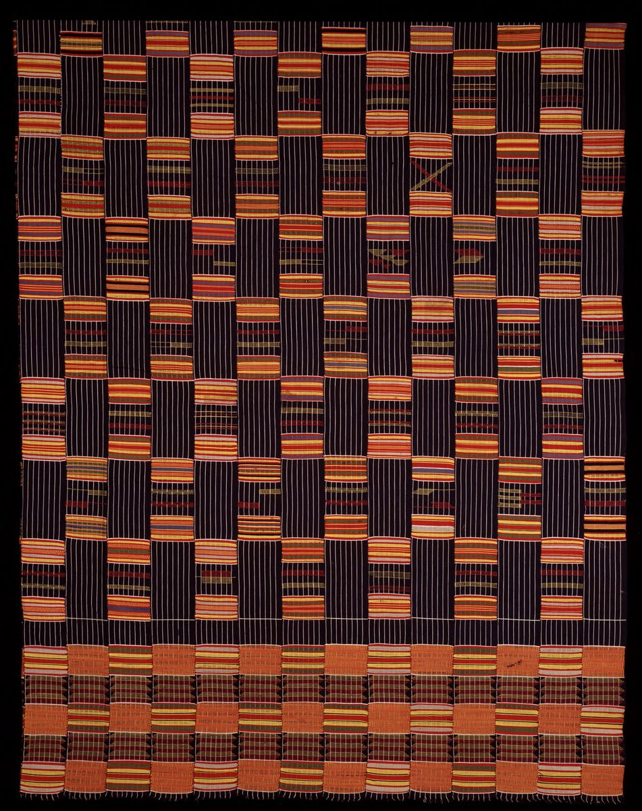
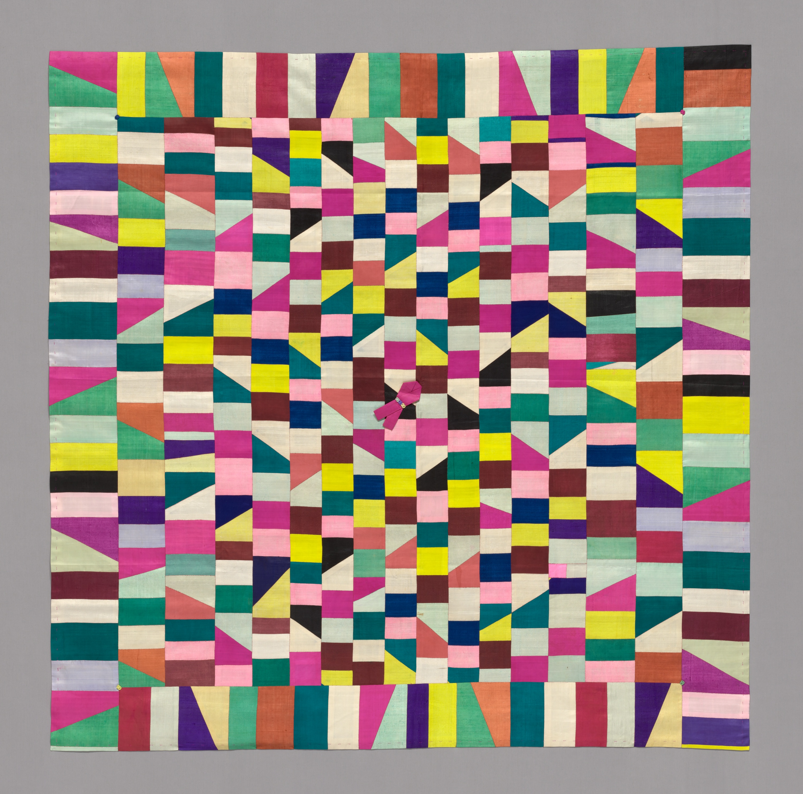

Life / Clothing
가나의 켄테는 왜 좁은 띠부터 짤까
좁은 천을 나란히 이어 큰 화면을 만드는 가나 아산테의 켄테 직조를 살펴봅니다.
이야기 읽기Life · 생활
익숙한 일상에서 발견하는 낯선 사연.
6개의 이야기

Life / Clothing
좁은 천을 나란히 이어 큰 화면을 만드는 가나 아산테의 켄테 직조를 살펴봅니다.
이야기 읽기Life / Clothing
옷 위의 작은 그림에는 입는 사람의 지위와 자수의 솜씨가 함께 담겼습니다.
이야기 읽기
Life / Clothing
피부에 바른 재료와 그 재료가 남긴 무늬를 나누어 봅니다.
이야기 읽기
Life / Clothing
자투리 천을 이은 바느질 선을 따라 한국 조각보의 쓰임과 구성을 살펴봅니다.
이야기 읽기
Life / Clothing
나무로 만든 작은 얼레빗이 낯선 왕실 인물을 가까이 데려옵니다.
이야기 읽기
Life / Clothing
구슬처럼 이어진 장신구가 향기를 간직하던 방법을 들여다봅니다.
이야기 읽기